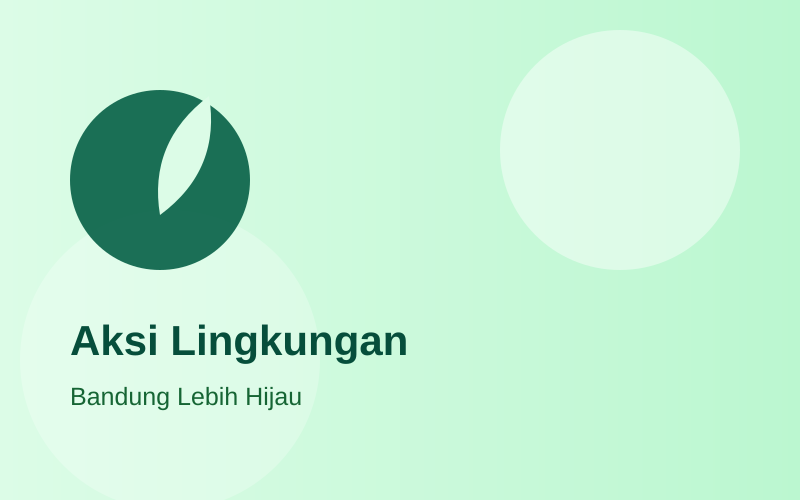

Potret aksi nyata, gotong royong, dan kebersamaan pemuda Karang Taruna di seluruh penjuru Kabupaten Bandung.
12 April 2026 • Kec. Soreang
10 April 2026 • Aula Soreang
08 April 2026 • Kec. Cileunyi
05 April 2026 • Gedung Moh. Toha
01 April 2026 • Kec. Ciwidey

28 Maret 2026 • Kec. Banjaran
20 Maret 2026 • Bandung
15 Maret 2026 • Kec. Pangalengan